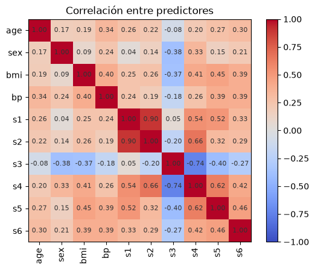
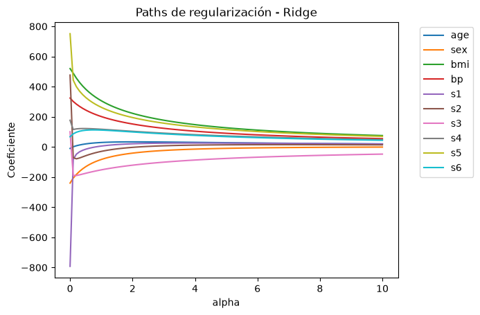
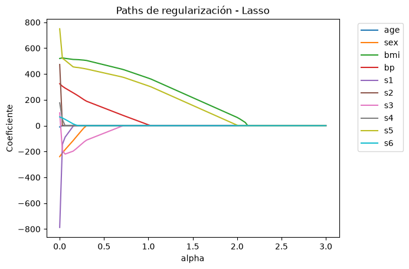
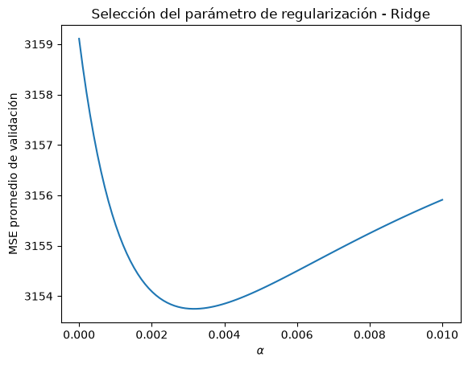
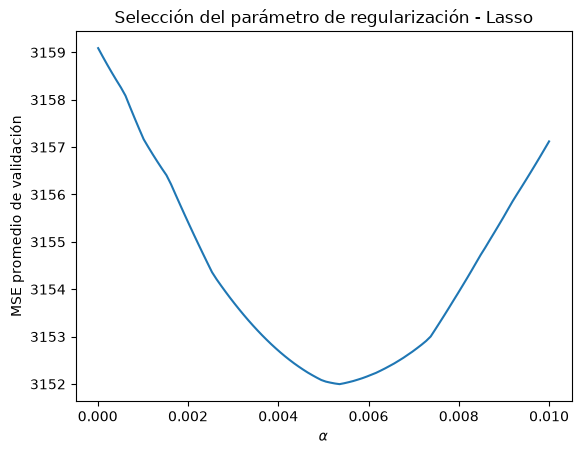
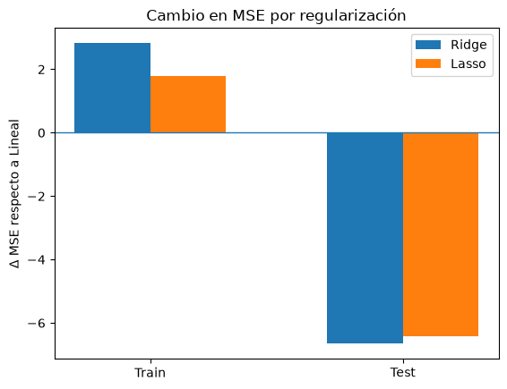

import numpy as np
import pandas as pd
import matplotlib.pyplot as pltLaboratorio 5. Regularización Rigde y Lasso
Carga y preparación de los datos
Utilizaremos el conjunto de datos Diabetes incluido en sklearn. Contiene información de 442 pacientes y 10 variables predictoras numéricas relacionadas con características clínicas y demográficas.
La variable de respuesta representa una medida cuantitativa de progresión de la enfermedad un año después de la medición inicial.
from sklearn.datasets import load_diabetes
data = load_diabetes(as_frame=True)
print(data.DESCR).. _diabetes_dataset:
Diabetes dataset
----------------
Ten baseline variables, age, sex, body mass index, average blood
pressure, and six blood serum measurements were obtained for each of n =
442 diabetes patients, as well as the response of interest, a
quantitative measure of disease progression one year after baseline.
**Data Set Characteristics:**
:Number of Instances: 442
:Number of Attributes: First 10 columns are numeric predictive values
:Target: Column 11 is a quantitative measure of disease progression one year after baseline
:Attribute Information:
- age age in years
- sex
- bmi body mass index
- bp average blood pressure
- s1 tc, total serum cholesterol
- s2 ldl, low-density lipoproteins
- s3 hdl, high-density lipoproteins
- s4 tch, total cholesterol / HDL
- s5 ltg, possibly log of serum triglycerides level
- s6 glu, blood sugar level
Note: Each of these 10 feature variables have been mean centered and scaled by the standard deviation times the square root of `n_samples` (i.e. the sum of squares of each column totals 1).
Source URL:
https://www4.stat.ncsu.edu/~boos/var.select/diabetes.html
For more information see:
Bradley Efron, Trevor Hastie, Iain Johnstone and Robert Tibshirani (2004) "Least Angle Regression," Annals of Statistics (with discussion), 407-499.
(https://web.stanford.edu/~hastie/Papers/LARS/LeastAngle_2002.pdf)
Nota: Las variables s1–s6 corresponden a seis mediciones obtenidas del suero sanguíneo: colesterol total (s1), LDL (s2), HDL (s3), colesterol total/HDL (s4), triglicéridos (s5) y glucosa (s6).
X = data.data
y = data.target
X.info()<class 'pandas.DataFrame'>
RangeIndex: 442 entries, 0 to 441
Data columns (total 10 columns):
# Column Non-Null Count Dtype
--- ------ -------------- -----
0 age 442 non-null float64
1 sex 442 non-null float64
2 bmi 442 non-null float64
3 bp 442 non-null float64
4 s1 442 non-null float64
5 s2 442 non-null float64
6 s3 442 non-null float64
7 s4 442 non-null float64
8 s5 442 non-null float64
9 s6 442 non-null float64
dtypes: float64(10)
memory usage: 34.7 KBX.head()| age | sex | bmi | bp | s1 | s2 | s3 | s4 | s5 | s6 | |
|---|---|---|---|---|---|---|---|---|---|---|
| 0 | 0.038076 | 0.050680 | 0.061696 | 0.021872 | -0.044223 | -0.034821 | -0.043401 | -0.002592 | 0.019907 | -0.017646 |
| 1 | -0.001882 | -0.044642 | -0.051474 | -0.026328 | -0.008449 | -0.019163 | 0.074412 | -0.039493 | -0.068332 | -0.092204 |
| 2 | 0.085299 | 0.050680 | 0.044451 | -0.005670 | -0.045599 | -0.034194 | -0.032356 | -0.002592 | 0.002861 | -0.025930 |
| 3 | -0.089063 | -0.044642 | -0.011595 | -0.036656 | 0.012191 | 0.024991 | -0.036038 | 0.034309 | 0.022688 | -0.009362 |
| 4 | 0.005383 | -0.044642 | -0.036385 | 0.021872 | 0.003935 | 0.015596 | 0.008142 | -0.002592 | -0.031988 | -0.046641 |
corr = X.corr()
plt.imshow(corr, cmap="coolwarm", vmin=-1, vmax=1)
plt.colorbar()
plt.xticks(range(len(corr.columns)), corr.columns, rotation=90)
plt.yticks(range(len(corr.columns)), corr.columns)
for i in range(len(corr.columns)):
for j in range(len(corr.columns)):
plt.text(j, i, f"{corr.iloc[i, j]:.2f}",
ha="center", va="center", size=8, c="0.2")
plt.title("Correlación entre predictores")
plt.show()
Se observa una alta correlación positiva entre s1 y s2 y una alta correlación negativa entre s3 y s4. También se aprecia una correlación positiva moderada entre s2 y s4. Para el resto de los pares, las correlaciones lineales son débiles o moderadas. Sin embargo, una baja correlación entre pares de predictores no implica necesariamente ausencia de multicolinealidad, ya que una variable puede estar fuertemente relacionada con una combinación lineal de varias de las demás variables, relación que no puede detectarse únicamente mediante la matriz de correlaciones por pares.
Recordemos que la multicolinealidad puede provocar coeficientes de regresión de magnitud muy grande y altamente sensibles a pequeñas variaciones en los datos, haciendo que las estimaciones de los coeficientes y, potencialmente, las predicciones del modelo sean inestables. Para reducir estos efectos, utilizaremos regresión regularizada, donde se introduce una penalización sobre la magnitud de los coeficientes con el objetivo de controlar su crecimiento y mejorar la estabilidad del modelo.
Implementación simple
Primero implementaremos un modelo de regresion lineal sin regularización para poder observar qué pasa con los coeficientes cuando agregamos una penalización.
from sklearn.model_selection import train_test_split
X_train, X_test, y_train, y_test = train_test_split(
X, y,
test_size=0.25,
random_state=42
)from sklearn.linear_model import LinearRegression, Ridge, Lasso
lm = LinearRegression()
lm.fit(X_train, y_train)
pd.Series(lm.coef_, index=X.columns)age 47.749681
sex -241.990907
bmi 531.971063
bp 381.562862
s1 -918.502905
s2 508.257783
s3 116.950164
s4 269.492303
s5 695.808117
s6 26.324582
dtype: float64Los predictores altamente correlacionados presentan algunos de los coeficientes de mayor magnitud, particularmente s1 (-918.50) y s2 (508.26). Esto es consistente con la presencia de multicolinealidad, que puede producir coeficientes grandes e inestables.
Para reducir la magnitud de los coeficientes utilizaremos Ridge Regression como estrategia de regularización. Por el momento, utilizaremos \(\alpha = 1\).
ridge = Ridge(alpha=1)
ridge.fit(X_train, y_train)
pd.Series(ridge.coef_, index=X.columns)age 50.552012
sex -67.722224
bmi 278.301228
bp 197.622638
s1 -6.245836
s2 -26.226726
s3 -151.394331
s4 120.323359
s5 215.854463
s6 101.755774
dtype: float64Como segunda estrategia de regularización utilizaremos Lasso Regression, manteniendo el mismo nivel de penalización, \(\alpha = 1\).
lasso = Lasso(alpha=1)
lasso.fit(X_train, y_train)
pd.Series(lasso.coef_, index=X.columns)age 0.000000
sex -0.000000
bmi 398.385831
bp 46.175421
s1 0.000000
s2 0.000000
s3 -0.000000
s4 0.000000
s5 238.187309
s6 0.000000
dtype: float64coef = pd.DataFrame({
"Variable": X.columns,
"Lineal": lm.coef_,
"Ridge": ridge.coef_,
"Lasso": lasso.coef_
})
coef| Variable | Lineal | Ridge | Lasso | |
|---|---|---|---|---|
| 0 | age | 47.749681 | 50.552012 | 0.000000 |
| 1 | sex | -241.990907 | -67.722224 | -0.000000 |
| 2 | bmi | 531.971063 | 278.301228 | 398.385831 |
| 3 | bp | 381.562862 | 197.622638 | 46.175421 |
| 4 | s1 | -918.502905 | -6.245836 | 0.000000 |
| 5 | s2 | 508.257783 | -26.226726 | 0.000000 |
| 6 | s3 | 116.950164 | -151.394331 | -0.000000 |
| 7 | s4 | 269.492303 | 120.323359 | 0.000000 |
| 8 | s5 | 695.808117 | 215.854463 | 238.187309 |
| 9 | s6 | 26.324582 | 101.755774 | 0.000000 |
La regresión Ridge reduce considerablemente la magnitud de los coeficientes, especialmente en variables como s1 y s2, aunque mantiene todas las variables en el modelo. Por otro lado, Lasso lleva varios coeficientes exactamente a cero, conservando principalmente bmi, bp y s5. Esto muestra la diferencia fundamental entre ambas estrategias: Ridge reduce los coeficientes, mientras que Lasso además puede realizar selección de variables.
Paths de regularización
Hasta ahora hemos utilizado un coeficiente de regularización arbitrario (\(\alpha = 1\)). Observemos ahora el efecto del parámetro de regularización sobre la magnitud de los coeficientes conforme incrementamos el valor de \(\alpha\).
# Ajustamos regresión Ridge para cada valor de alpha
alphas = np.linspace(0, 10, 100)
ridge_coefs = []
for alpha in alphas:
model = Ridge(alpha=alpha)
model.fit(X, y)
ridge_coefs.append(model.coef_)
ridge_coefs = np.array(ridge_coefs)for i, variable in enumerate(X.columns):
plt.plot(alphas, ridge_coefs[:, i], label=variable)
plt.xlabel("alpha")
plt.ylabel("Coeficiente")
plt.title("Paths de regularización - Ridge")
plt.legend(bbox_to_anchor=(1.05, 1))
plt.show()
A medida que aumenta \(\lambda\), los coeficientes de Ridge disminuyen progresivamente en magnitud y convergen hacia cero. El efecto es especialmente notable en los coeficientes inicialmente más grandes, mostrando cómo la regularización controla estimaciones extremas. Sin embargo, Ridge no lleva los coeficientes exactamente a cero, sino que reduce gradualmente su contribución.
# Ajustamos regresión Lasso para cada valor de alpha
alphas = np.linspace(0, 3, 100)
lasso_coefs = []
for alpha in alphas:
model = Lasso(alpha=alpha, max_iter=10000)
model.fit(X, y)
lasso_coefs.append(model.coef_)
lasso_coefs = np.array(lasso_coefs)c:\Users\denis\Desktop\modelado-de-datos\.venv\Lib\site-packages\sklearn\base.py:1403: UserWarning: With alpha=0, this algorithm does not converge well. You are advised to use the LinearRegression estimator
return fit_method(estimator, *args, **kwargs)for i, variable in enumerate(X.columns):
plt.plot(alphas, lasso_coefs[:, i], label=variable)
plt.xlabel("alpha")
plt.ylabel("Coeficiente")
plt.title("Paths de regularización - Lasso")
plt.legend(bbox_to_anchor=(1.05, 1))
plt.show()
A diferencia de Ridge, Lasso puede llevar los coeficientes exactamente a cero conforme aumenta \(\lambda\), eliminando predictores del modelo. En este caso, una penalización de aproximadamente \(\lambda = 2.5\) es suficiente para que todos los coeficientes sean cero, mostrando que una regularización excesiva puede eliminar completamente la capacidad predictiva del modelo.
Validación cruzada
Hasta ahora elegimos \(\alpha\) arbitrariamente. En un problema real, este valor debe considerarse un hiperparámetro y seleccionarse utilizando datos que no hayan sido utilizados para ajustar el modelo.
Para ello utilizaremos validación cruzada, evaluando diferentes valores de \(\alpha\) y seleccionando aquel que produzca el menor error cuadrático medio (MSE) promedio en validación.
Regresión Ridge
from sklearn.model_selection import KFold
from sklearn.metrics import mean_squared_error
# Valores candidatos para el parámetro de regularización
alphas = np.linspace(1e-10, 1e-2, 100)
# División de los datos en 5 folds para validación cruzada
kf = KFold(n_splits=5, shuffle=True, random_state=42)
# MSE promedio de validación para cada valor de alpha
mse_alpha = []
for alpha in alphas:
# MSE de validación obtenido en cada fold
mse_folds = []
for train_idx, val_idx in kf.split(X_train):
X_tr = X_train.iloc[train_idx]
X_val = X_train.iloc[val_idx]
y_tr = y_train.iloc[train_idx]
y_val = y_train.iloc[val_idx]
# Modelo Ridge con el parámetro de regularización actual
model = Ridge(alpha=alpha)
model.fit(X_tr, y_tr)
y_pred = model.predict(X_val)
mse_folds.append(mean_squared_error(y_val, y_pred))
# MSE promedio de los folds
mse_alpha.append(np.mean(mse_folds))plt.plot(alphas, mse_alpha)
plt.xlabel(r"$\alpha$")
plt.ylabel("MSE promedio de validación")
plt.title("Selección del parámetro de regularización - Ridge")
plt.show()
Debemos seleccionar el valor de \(\alpha\) que produzca el menor MSE promedio de validación, ya que este representa el nivel de regularización que ofrece el mejor desempeño sobre los datos de validación.
best_alpha = alphas[np.argmin(mse_alpha)]
best_mse = np.min(mse_alpha)
plt.plot(alphas, mse_alpha)
plt.scatter(best_alpha, best_mse)
plt.xlabel(r"$\alpha$")
plt.ylabel("MSE promedio de validación")
plt.title("Selección del parámetro de regularización - Ridge")
plt.show()
print("Mejor alpha:", best_alpha)Mejor alpha: 0.0031313132000000002Utilizamos el alpha con menor MSE promedio de validación para ajustar el modelo final.
from sklearn.metrics import mean_squared_error
ridge = Ridge(alpha=best_alpha)
ridge.fit(X_train, y_train)
pd.Series(ridge.coef_, index=X.columns)age 49.319176
sex -239.913799
bmi 535.350081
bp 378.381608
s1 -662.161169
s2 308.609730
s3 3.014609
s4 233.456370
s5 597.103249
s6 29.504534
dtype: float64Regresión Lasso
# Valores candidatos para el parámetro de regularización
alphas = np.linspace(1e-5, 1e-2, 100)
# División de los datos en 5 folds para validación cruzada
kf = KFold(n_splits=5, shuffle=True, random_state=42)
# MSE promedio de validación para cada valor de alpha
mse_alpha_lasso = []
for alpha in alphas:
# MSE de validación obtenido en cada fold
mse_folds = []
for train_idx, val_idx in kf.split(X_train):
X_tr = X_train.iloc[train_idx]
X_val = X_train.iloc[val_idx]
y_tr = y_train.iloc[train_idx]
y_val = y_train.iloc[val_idx]
# Modelo Lasso con el parámetro de regularización actual
model = Lasso(alpha=alpha)
model.fit(X_tr, y_tr)
y_pred = model.predict(X_val)
mse_folds.append(mean_squared_error(y_val, y_pred))
# MSE promedio de los folds
mse_alpha_lasso.append(np.mean(mse_folds))plt.plot(alphas, mse_alpha_lasso)
plt.xlabel(r"$\alpha$")
plt.ylabel("MSE promedio de validación")
plt.title("Selección del parámetro de regularización - Lasso")
plt.show()
best_alpha_lasso = alphas[np.argmin(mse_alpha_lasso)]
print("Mejor alpha:", best_alpha_lasso)Mejor alpha: 0.005358181818181818from sklearn.metrics import mean_squared_error
lasso = Lasso(alpha=best_alpha)
lasso.fit(X_train, y_train)
pd.Series(lasso.coef_, index=X.columns)age 47.541716
sex -239.186606
bmi 535.042278
bp 378.925752
s1 -716.899189
s2 355.941187
s3 20.338589
s4 230.394710
s5 622.336597
s6 27.003668
dtype: float64# MSE de regresión lineal
mse_lineal = [
mean_squared_error(y_train, lm.predict(X_train)),
mean_squared_error(y_test, lm.predict(X_test))
]
# MSE de Ridge
mse_ridge = [
mean_squared_error(y_train, ridge.predict(X_train)),
mean_squared_error(y_test, ridge.predict(X_test))
]
# MSE de Lasso
mse_lasso = [
mean_squared_error(y_train, lasso.predict(X_train)),
mean_squared_error(y_test, lasso.predict(X_test))
]
# Tabla comparativa
mse_comparison = pd.DataFrame({
"Lineal": mse_lineal,
"Ridge": mse_ridge,
"Lasso": mse_lasso
}, index=["Train", "Test"])
mse_comparison| Lineal | Ridge | Lasso | |
|---|---|---|---|
| Train | 2907.257764 | 2910.084158 | 2909.038188 |
| Test | 2848.310651 | 2841.661403 | 2841.891798 |
# Diferencia del MSE respecto a regresión lineal
delta_ridge = np.array(mse_ridge) - np.array(mse_lineal)
delta_lasso = np.array(mse_lasso) - np.array(mse_lineal)
x = np.arange(2)
w = 0.3
plt.bar(x - w/2, delta_ridge, width=w, label="Ridge")
plt.bar(x + w/2, delta_lasso, width=w, label="Lasso")
plt.axhline(0, linewidth=1)
plt.xticks(x, ["Train", "Test"])
plt.ylabel(r"$\Delta$ MSE respecto a Lineal")
plt.title("Cambio en MSE por regularización")
plt.legend()
plt.show()
La regularización empeora ligeramente el MSE de entrenamiento, lo que se observa como una diferencia positiva respecto al modelo lineal. Sin embargo, mejora el MSE en datos no observados, reflejado por una diferencia negativa. Es decir, sacrificamos parte del ajuste en entrenamiento a cambio de una mejor capacidad de generalización.